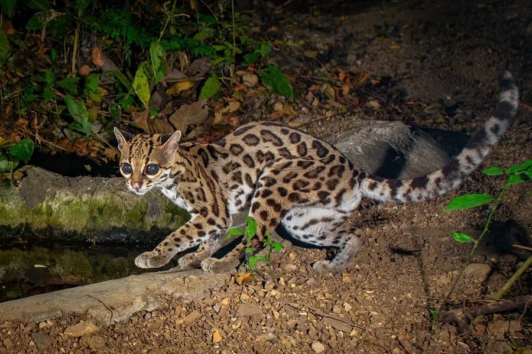

哺乳动物 · 动物界
长尾虎猫 Leopardus wiedii

中南美洲雨林中的小型树栖猫类，尾长几乎与身体相当，踝关节可旋转近半圈，能在树冠间追逐松鼠与鸟，因毛皮贸易而数量下降。
- 分类
- 门脊索动物门纲哺乳纲目食肉目科猫科属虎猫属
- 栖息环境
- 热带雨林、云雾林与河岸林，偏好郁闭度高的原始林
- 地理分布
- 墨西哥南部至阿根廷北部的拉丁美洲热带地区
- 保护级别
- IUCN 近危（NT）；CITES 附录Ⅰ
物种志
长尾虎猫体长 46–79 cm，尾长 33–51 cm，体重约 2.6–4 kg。毛色黄褐至橙黄，全身布满黑褐色斑点与环纹，尾长而粗，眼大，四肢修长，脚掌宽大，踝关节可向外旋转约 180 度，使它能头朝下攀爬树干。
它们分布于墨西哥南部至阿根廷北部的热带雨林、云雾林和河岸林，多在夜间单独活动，是猫科中树栖性最强的种类之一。食物包括松鼠、负鼠、小型灵长类、鸟类、蜥蜴、树蛙和昆虫，常在树冠层捕猎。每胎 1–2 仔，妊娠期约 80 天。栖息地丧失和历史上的毛皮贸易使种群下降，被列为近危物种。
形态与习性
- 食性松鼠、负鼠、小型灵长类、鸟类、蜥蜴与昆虫
- 体长46–79 cm，尾长 33–51 cm
- 体重约 2.6–4 kg
- 繁殖妊娠期约 80 天，每胎 1–2 仔
- 活动节律夜行性，独居，树栖性极强
- 特点踝关节可旋转约 180 度，能头朝下下树
趣味知识
- 长尾虎猫的踝关节可旋转近 180 度，使它能在树干上灵活地上攀或下行。
- 它曾被发现模仿绒猴幼仔的叫声，以吸引并捕食小型灵长类。
- 长尾虎猫的尾长几乎与身体相等，在树枝间跳跃时起平衡作用。